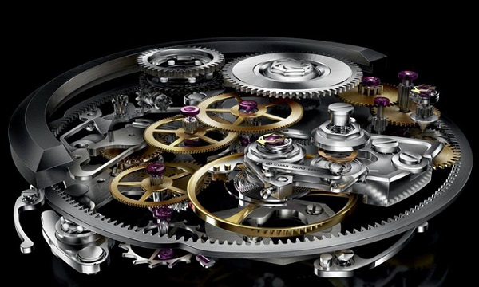
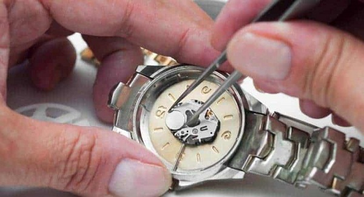
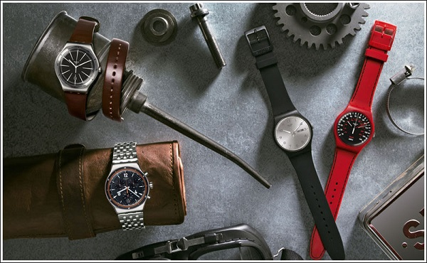
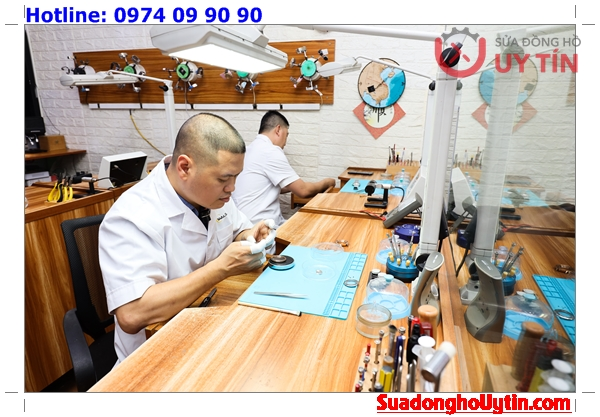
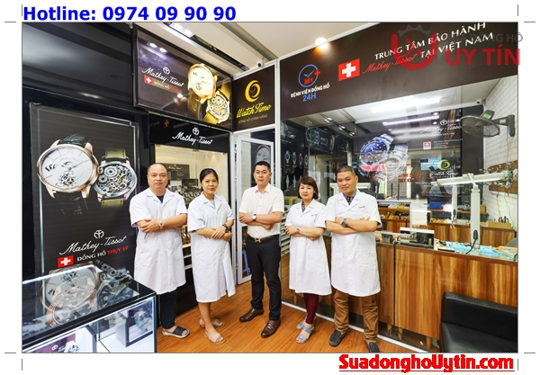
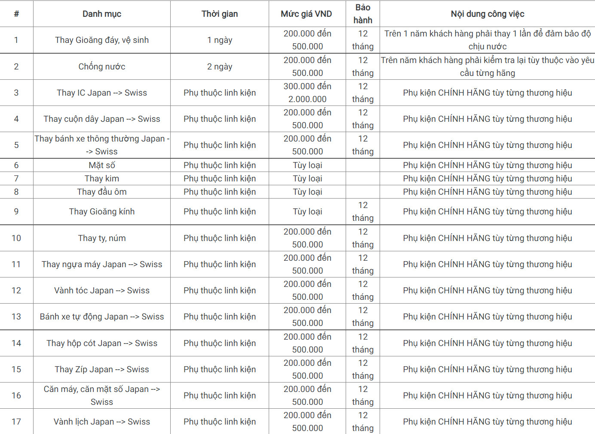
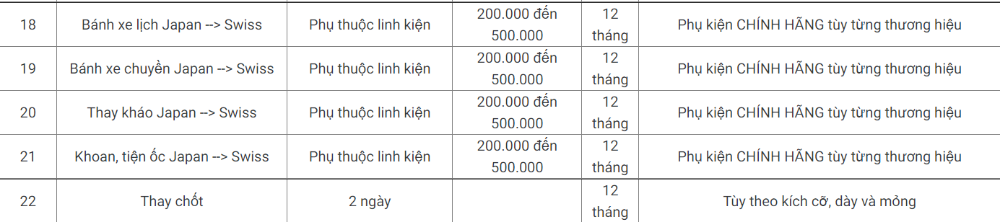

WatchTime ra đời với một tinh thần thay đổi ngành đồng hồ Việt Nam và mục tiêu cao cả: tư vấn lựa chọn và phân phối Đồng Hồ Chính Hãng ở mức giá hợp lý và vừa phải nhất cho khách hàng, ngoài ra cũng tiên phong trong cuộc chiến bài trừ đồng hồ Fake khỏi thị trường Việt Nam
Tiệm Sửa Đồng Hồ Uy Tín Tại Hà Nội & TPHCM 【Kèm Báo Giá 2022】
Watchtime chuyên sửa chữa đồng hồ chính hãng. Với đội ngũ thợ sửa chữa được đào tạo bài bản có hơn 10 năm kinh nghiệm sửa chữa đồng hồ. Khi có nhu cầu sửa đồng hồ đeo tay hãy tới ngay cửa hàng tại Hà Nội & TPHCM của Watchtime nơi bạn có thể an tâm tuyệt đối với dịch vụ của chúng tôi. Chiếc đồng hồ của bạn đang gặp vấn đề về vỡ kính, xước, gỉ, bong tróc dây deo, chạy nhanh hoặc bị chạy chậm,... Hãy dẹp tan lo lắng của bạn và đến với WatchTime - địa chỉ sửa chữa đồng hồ uy tín. Với nhiều năm kinh nghiệm trong lĩnh vực sửa chữa, bảo hành và thay thế linh kiện đồng hồ uy tín tại Việt Nam cùng hệ thống showroom trải dài từ Bắc vào Nam, chúng tôi cam kết sẽ làm bạn hài lòng.
CƠ SỞ 1. HÀ NỘI: Số 235 Bạch Mai - Hai Bà Trưng - Hà Nội. Hotline 0974 099 090 - 04 66 55 22 03
CƠ SỞ 2. TP HỒ CHÍ MINH: Số 58 Nguyễn Cư Trinh - Quận 1 - Hồ Chí Minh. Hotline 0986.686.909
Dịch vụ sửa chữa đồng hồ tại Watchtime
Watchtime là một thương hiệu với hơn 10 năm kinh nghiệm trong ngành sửa chữa & bảo dưỡng đồng hồ đeo tay tại Hà Nội & TPHCM. Watchtime đã chinh phục hàng nghìn khách hàng bởi sự tận tâm của đội ngũ kỹ thuật viên. Tất cả đội ngũ thợ được đào tạo bài bản về trình độ chuyên môn, nghiệp vụ, tay nghề sửa đồng hồ.
Thay pin đồng hồ
Thay Pin đồng hồ lấy ngay & được bảo dưỡng theo quy trình 6 bước chuẩn kỹ thuật. Chất lượng pin nhập khẩu kèm bảo hành dài hạn
Thay pin đồng hồ chính hãng

Thay mặt kính
Tại Watchtime chúng tôi có đủ các loại kích cỡ, size mặt từ kính phẳng, kính cong, kính vuông, kính chữ nhật … Chất liệu sử dụng là các dòng kính sapphire chống xước hoặc kính khoáng
Thay dây cắt mắt đồng hồ
Chúng tôi cung cấp dây da đồng hồ nam nữ xịn từ da bò, da cá sấu, da đà điểu, da ngựa. Với hơn 10 năm kinh doanh trong lĩnh vực phụ kiện đồng hồ Chúng tôi tự tin uy tín giá rẻ nhất Hà Nội.
Ngoài ra chúng tôi còn nhận:
Tại sao bạn nên lựa chọn dịch vụ sửa chữa đồng hồ tại WatchTime?
Đầu tiên là bởi chúng tôi luôn luôn có sẵn đội ngũ nhân viên dày dặn kinh nghiệm được đào tạo tại những trường nghề nổi tiếng. Với sự nhiệt tình và chuyên môn của mình, mọi khách hàng khi đến với chúng tôi đều được kiểm tra cụ thể và bắt đúng bệnh của chiếc đồng hồ.
Ngoài ra, chúng tôi còn trang bị phòng kĩ thuật với đầy đủ tiện nghi với những tiêu chuẩn cực kì khắt khe. Chúng tôi không chỉ thăm khám, sửa chữa những đồng hồ thuộc quản lí của cửa hàng mà còn sửa được các đồng hồ đến từ các thương hiệu nổi tiếng khác trên thế giới. Với hệ thống sửa chữa, trang thiết bị, dụng cụ đo điện tử chuyên dụng chiếc đồng hồ của bạn sẽ được kiểm tra chuẩn đoán chính xác bệnh.
Bên cạnh đó, chúng tôi còn tư vấn miễn phí và thăm hỏi khách hàng trong quá trình sau sửa chữa. Chúng tôi cam kết cung cấp tất cả các mặt hàng chính hãng cũng như chế độ bảo hành và hậu mãi tốt nhất. Tất cả các dịch vụ sửa chữa và thay thế linh kiện đồng hồ mà chúng tôi cung cấp đều đảm bảo chất lượng và theo quy trình chuẩn quốc tế, mà giá cả lại vô cùng phải chăng.
Quy trình sửa chữa, thay thế linh kiện đồng hồ tại WatchTime
Bước 1. Tiếp nhận, kiểm tra đồng hồ
Bước 2. Thông báo tình trạng đồng hồ cho khách hàng và báo giá sửa chữa và thay thế linh kiện
Bước 3. Xác lập hóa đơn hẹn và biểu phí cho khách hàng.
Bước 4. Tiến hành sửa chữa, thay thế kinh kiện cho khách hàng
Bước 5. Hậu kiểm sau khi sửa chữa
Bước 6. Hoàn trả cho khách hàng
Lưu ý:
Bảng báo giá dịch vụ sửa chữa, thay thế linh kiện đồng hồ
Chi tiết từng dịch vụ cụ thể thì quý khách có thể tham khảo ở bảng báo giá dịch vụ sửa chữa, thay thế linh kiện đồng hồ của WatchTime dưới đây:
 
Người xưa có câu: “Thời gian là vàng” chính là để nhắc nhở chúng ta phải biết quý trọng mỗi giây phút trôi qua. Chính vì thông điệp đó mà WatchTime với nhiều năm kinh nghiệm trong lĩnh vực phân phối và sửa chữa đồng hồ luôn mang đến cho khách hàng những điều tuyệt vời nhất từ chiếc đồng hồ đeo tay. Chúng tôi hoạt động theo phương châm đặt quyền lợi khách hàng lên đầu. Do đó khách hàng hoàn toàn yên tâm khi gửi gắm chiếc đồng hồ của mình.